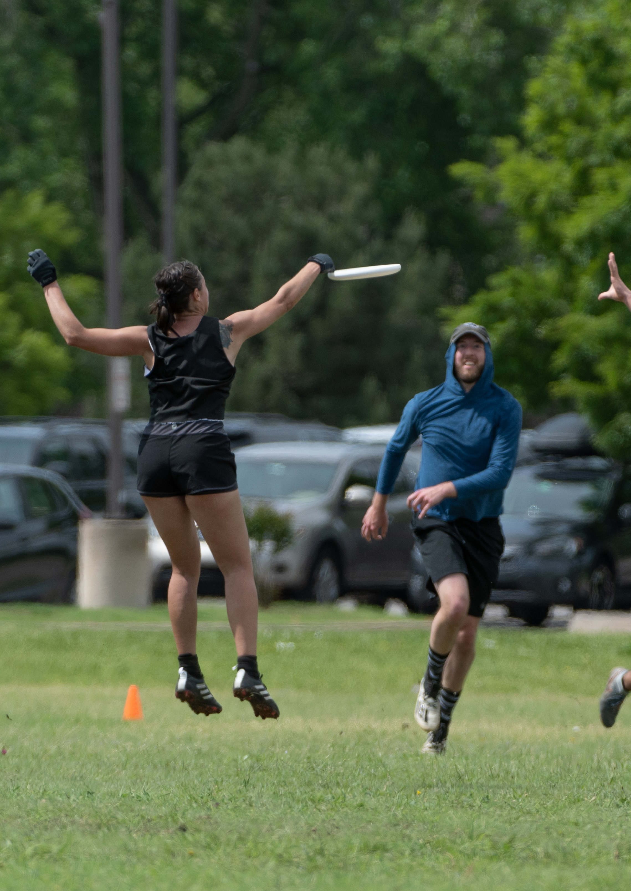
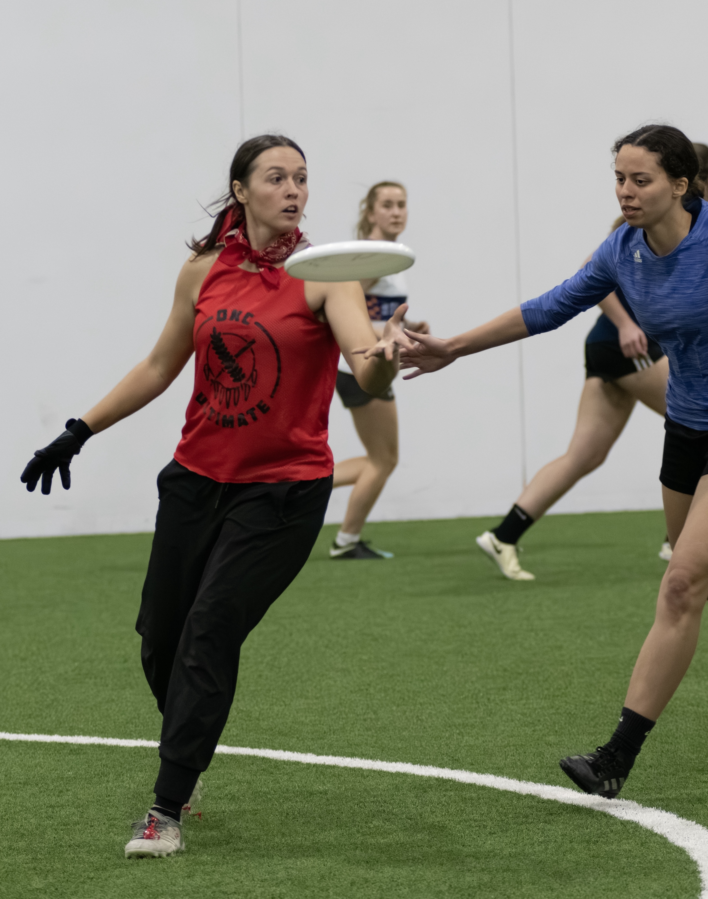

Bio
Independent contractor under the independent business brand Kebu seeking to contribute thoughtful content and sustainable processes while gaining valuable insights about human-system interactions and learning. Finishing education in Systems Engineering, UX with the goal of designing inclusive digital user interfaces. Experienced in marketing, project management, administration, customer service, writing, editing, tutoring.
UX Engineering
This is my passion area and my soapbox. I am pursuing a degree in Systems Engineering with a User Experience (UX) focus. I took interest in this field because disabled people are Users with Experiences. I think there's an untapped world of possibility in technology and designs that see impairment as part of the tapestry of experience. I am super excited for the continued development of AR and VR, and I think we have a real shot at designing new digital technologies with disability and impairment in mind at the beginning of the process (rather than as after thoughts). In the future, this will just be called good design.
Tutoring
I love tutoring because it allows me to witness students enjoy their hard-earned success. Tutors don't grade learners on their abilities. Instead, we encourage them to learn! I feel that this tackles the barriers that often exist between teachers and students, so that the tutor (that's me!) can develop close relationships with their learners. Students then trust their tutor to critique their work and help them make deep, lasting improvements to their learning process.
I began tutoring as a volunteer peer tutor. Then my work continued through the campus writing center at Oklahoma Christian University. As a university tutor, I peer-taught academic writing across a variety of fields, including graduate Engineering writing. I have tutored K-12 core subjects with Wyzant since 2015. In 2019 I created the independent brand Kebu to manage my tutoring and other contract work. Since then, I've added ESLA intermediate-advanced tutoring, and test-taking for SAT/PSAT, ACT, GED, USCIS, PTCB, and IBEW. I've tutored K-8 students in all core subjects; High school students in language, literature, and algebra; college students in mathematics and English; ESL graduate students in academic writing; and adult learners in various fields.
Project Management
As a Systems Engineering student, Independent Contractor, Marketing Project Manager, and the Assistant to the Dean for College of Engineering and Computer Science, I learned the value of digital and physical organizational systems, as well as clear communication. Not all projects move at the same pace. In my work, I have learned how to really listen to my clients and their needs, identifying core concerns that are both internal to the project and external so that we can meet influencing obstacles together.
Ultimate Frisbee
I would be remiss if I didn't mention how much of my time and focus goes into ultimate frisbee. It's a sport that combines strategy, athleticism, and spirit of the game in a way that's truly unique.



